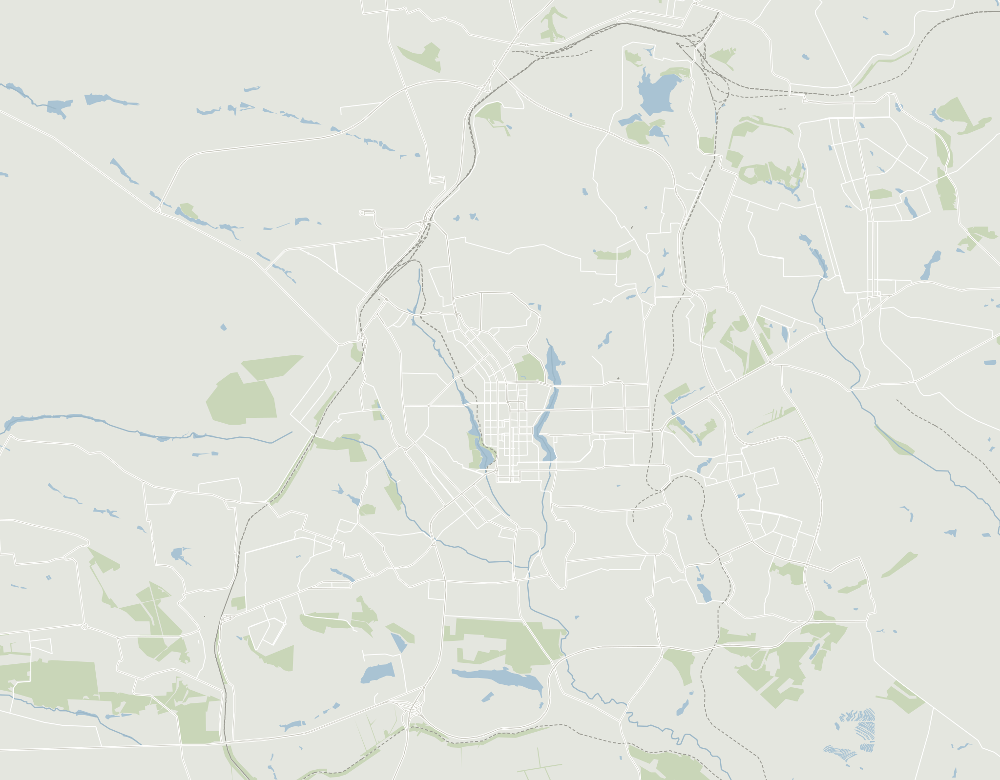
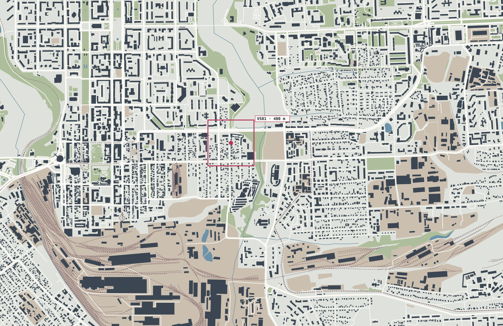

Донецк, каким я его помню
Город до 2014 года на фотографиях жителей и гостей: 22 снимка 2008–2013 годов. Все взяты из Wikimedia Commons под свободными лицензиями, у каждого указан автор.
Нажмите на фото, чтобы открыть его крупно. Ссылка в подписи ведёт к оригиналу и лицензии.
Есть свои снимки Донецка 2008–2012 годов?
Улицы, дворы, остановки, магазины, школы — всё, что снято до 2013 года. Такие фото помогают восстанавливать город точно, а лучшие появятся в квизе и архиве с твоим именем.
- Только твои собственные снимки
- Без крупных планов чужих людей и номеров машин
- Публикация под лицензией CC BY-SA 4.0 с указанием автора
Откроется письмо с готовыми полями. Прикрепи фото и напиши, где и когда они сняты. Каждое фото проверяется перед публикацией.
Город на карте: где сделан каждый снимок
Все фотографии сайта на одной карте Донецка. Нажми на точку, и откроются снимки этого места. Двойные точки — места из «Тогда и потом».

© OpenStreetMap contributors
Помнишь, где это?
Снимки Донецка 2008–2013 годов с Wikimedia Commons. Узнай место, найди его на карте, угадай год или сыграй в общее фото дня.
Те же места до и после 2014 года
Четыре места, которые знал каждый дончанин. Снимок около 2011 года и снимок того же места позже. Веди ползунок времени, и второе фото проявится поверх первого.
Все снимки взяты из Wikimedia Commons под свободными лицензиями. Автор и лицензия указаны под каждым фото.
Проедь через город на «единичке»
Маршрут №1 шёл от железнодорожного вокзала через центр, мимо «Донбасс Арены» и площади Ленина, к металлургическому заводу: 11 километров и 26 остановок. Нажми «Поехали», включи звук и смотри в окно.
Фото этой остановки пока нет. Есть своё? Пришли →
Названия и места остановок взяты из нынешнего списка маршрута и снимков 2009–2013 годов. Часть названий в 2011 году могла быть другой, точки примерные. Звук собран прямо в браузере. wikiroutes ↗ · TransPhoto ↗ · Wikipedia 2010 ↗
Каким был Донецк в октябре 2011 года
Реконструкция застыла в одном месяце, и вот он по дням: погода с городской метеостанции, матчи, первый заморозок и перевод часов. Только факты со ссылками на источники.
Таблица по дням
| День | Мин. | Макс. | Средняя | Осадки, мм |
|---|---|---|---|---|
| 1 | 1,7 | 17,2 | 10,4 | 0 |
| 2 | 2,2 | 12,6 | 6,9 | 0 |
| 3 | 2,2 | 10,9 | 6,3 | 0 |
| 4 | 3 | 17,4 | 10,4 | 4,1 |
| 5 | 10,9 | 20,1 | 15,3 | 2 |
| 6 | 10,3 | 21,2 | 15 | 0 |
| 7 | 10,2 | 24,1 | 16,2 | 0 |
| 8 | 11,8 | 23,7 | 16,9 | 0 |
| 9 | 12 | 22,3 | 17,2 | 0 |
| 10 | 14,2 | 18,8 | 15,6 | 7,1 |
| 11 | 11,7 | 20,7 | 15,4 | 0 |
| 12 | 10,6 | 24 | 14,7 | 8,1 |
| 13 | 3,7 | 12,2 | 8,8 | 15 |
| 14 | 3 | 11,3 | 6,6 | 0 |
| 15 | 2,2 | 9,9 | 5,7 | 0 |
| 16 | 2 | 9,6 | 5,5 | 0 |
| 17 | 1,7 | 6,4 | 3,2 | 2 |
| 18 | 1,7 | 8,2 | 5,8 | 18 |
| 19 | 7,6 | 10,1 | 8,7 | 5,6 |
| 20 | 7,1 | 9,2 | 8,2 | 0 |
| 21 | 6 | 8,6 | 7,7 | 0 |
| 22 | 4,5 | 8 | 6,9 | 0 |
| 23 | 2,8 | 10,3 | 6,7 | 0 |
| 24 | −0,8 | 8,4 | 2,9 | 0 |
| 25 | −1,1 | 5,2 | 1,4 | 0 |
| 26 | −4,4 | 1,6 | −1,6 | 0 |
| 27 | −4,9 | 5,5 | 0,6 | 0 |
| 28 | 1,8 | 6 | 3,6 | 0 |
| 29 | 2 | 3,2 | 2,7 | 0 |
| 30 | −0,4 | 4,7 | 1,8 | 0 |
| 31 | −3,3 | 10,1 | 2,9 | 0 |
День за днём
- Футбол
«Шахтёр» дома обыграл луганскую «Зарю» 4:1, два гола забил Евгений Селезнёв. На трибунах 30 804 зрителя.
Источник: sport.ua ↗ - Город
Кубок Лиги чемпионов три дня стоял на площади Ленина. В город его привезли Луиш Фигу и Дуайт Йорк.
Источник: UNIAN ↗ - Погода
Холодный фронт: за два дня выпало 23 мм дождя, средняя температура упала с 14,7 до 8,8 °C.
Источник: NOAA GSOD · Tutiempo ↗ - Время
Середина месяца: солнце встало в 6:47 и село в 17:41. По этому дню светит солнце в 3D-квартале.
Посмотреть этот закат в 3D-квартале →Источник: sunrise-sunset.org ↗ - Хоккей
ХК «Донбасс» обыграл «Торос» из Нефтекамска 3:0 во дворце спорта «Дружба». Пришли 3 155 зрителей.
«Дружба» тогда и потом →Источник: sport.ua ↗ - Время
Верховная Рада вернула перевод часов на зимнее время, который сама отменила месяцем раньше.
Источник: Lenta.ru ↗ - Футбол
Лига чемпионов на «Донбасс Арене»: «Шахтёр» — «Зенит» 2:2, голы Виллиана и Луиза Адриано. 50 578 зрителей.
Источник: UEFA.com ↗ · Wikipedia ↗ - Футбол
«Шахтёр» дома уступил «Металлисту» 1:2 при 45 204 зрителях. Харьковчане впервые с 2004 года обыграли «Шахтёр» в чемпионате.
Источник: LB.ua ↗ - Погода
Самый холодный день месяца: в среднем −1,6 °C, днём не выше +1,6 °C.
Источник: NOAA GSOD · Tutiempo ↗ - Время
Часы перевели на зимнее время, с UTC+3 на UTC+2. 29 октября солнце село в 17:16, 31-го уже в 16:13.
Источник: Lenta.ru ↗ · sunrise-sunset.org ↗ - Город
Аэропорт готовился к Евро-2012: новая полоса длиной 4 км работала с июля, новый терминал ещё строили. Его откроют 14 мая 2012 года.
Аэропорт тогда и потом →Источник: UNIAN ↗ · RIA Novosti ↗
Город, который мы помним
Донецк помнят сотни тысяч людей. Отметь на карте место, которое помнишь ты: двор, школу, остановку, лавочку. Напиши пару строк. После проверки воспоминание появится здесь, рядом с остальными.

Нажми на карту, чтобы выбрать место
Аккаунт не нужен: кнопка «Отправить письмом» откроет почту с уже заполненным письмом. Если есть GitHub, можно оставить заявку там, она сразу видна публично. На карту всё попадает после проверки.
О людях, местах и жизни города. Без чужих имён, адресов и телефонов, без оскорблений и политических споров.
Карта: эталонная карта проекта 4,37 × 2,84 км из 8 508 элементов © OpenStreetMap (ODbL), в метрах от точки у дома 33. Воспоминания за пределами кадра видны в списке.